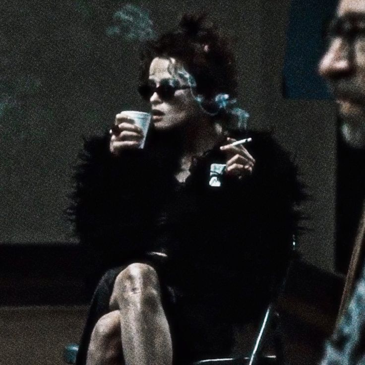

Reparto
El reparto de la pelicula esta conformado por:
- Narrador Este personaje es interpretado por Edward Norton. El nombre del narrador-protagonista nunca es revelado a lo largo de la película. Se trata de un hombre común, consumido por su trabajo, el cansancio y la soledad, que comienza a perder la cabeza como consecuencia del insomnio persistente. Su vida cambia cuando se cruzan por su camino Tyler Durden y Marla Singer.
- Tyler durden Interpretado por Brad Pitt, es el hombre que el narrador conoce en el avión. Fabricante de jabones, proyeccionista de cine y mesero en hoteles de lujo, Tyler sobrevive con diferentes trabajos pero no esconde su desprecio al sistema social y financiero.
- Marla Singer Interpretada por Helen Bonham Carter, es una mujer solitaria y perturbada. Conoce al narrador en los grupos de apoyo a los que ambos asistían buscando llenar el vacío de sus vidas.
Fundador del club de la pelea y líder del Proyecto Caos, se descubre que se trata de otra personalidad del narrador que, mientras dormía, planeaba meticulosamente una revolución.
Después de un intento fallido de suicidio, se envuelve con Tyler, la otra personalidad del narrador, y forma así el tercer vértice de un enrarecido triángulo.
